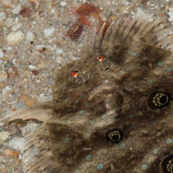
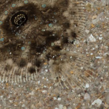

|
|
| fishes text index | photo index |
| Phylum Chordata > Subphylum Vertebrata > fishes > Order Pleuronectiformes |
| Three-spot flounder Grammatobothus polyophthalmus Family Bothidae updated Sep 2020 Where seen? This a small specimen of this flattened fish was seen once at Cyrene Reef. Features: To about 17cm. Eyes on the left side. Body oval almost circular, it has a tiny pectoral fin on the eyed-side. Dorsal and anal fins separated from the tail fin. Dorsal fin near the head has elongated fin rays. The eyed-side with three large eye-like spots. Sometimes confused with other flatfishes. The Large-toothed flounder (Family Paralichthyidae) looks very similar but is more oval and has more smaller spots. Here's more on how to tell apart the flatfish families commonly seen. |
 Cyrene Reef, May 08 |
 Eyes on the left side. |
 Tail fin separated from the dorsal and anal fins. |
| Three-spot flounders on Singapore shores |
On wildsingapore
flickr
|
| Family Bothidae recorded for Singapore from Wee Y.C. and Peter K. L. Ng. 1994. A First Look at Biodiversity in Singapore. *Lim, Kelvin K. P. & Jeffrey K. Y. Low, 1998. A Guide to the Common Marine Fishes of Singapore. +Other additions (Singapore Biodiversity Records, etc).
|
Links
References
|